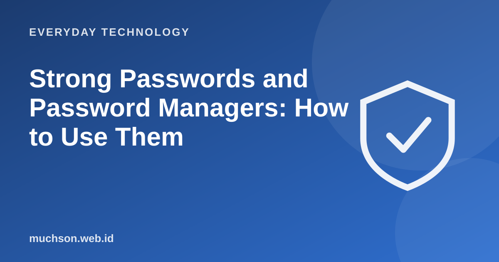

Home › Articles › Everyday Technology
Everyday TechnologyStrong Passwords and Password Managers: How to Use Them
Most account break-ins are not down to genius hackers, but to weak passwords or ones reused in many places. The good news is that fixing it is not hard once you know the principles.

What decides strength: length
Every extra character makes the number of possibilities jump. A long, memorable passphrase, for example four or five random words, is often stronger and easier to remember than a short word full of symbols. Try it on the sample below, and do not type your real password.
| Length (lowercase only) | Number of possibilities | At 10 billion guesses a second, guessing them all takes about |
|---|---|---|
| 6 letters | about 309 million | under 1 second |
| 8 letters | about 209 billion | about 21 seconds |
| 10 letters | about 141 trillion | about 4 hours |
| 12 letters | about 95 quadrillion | about 110 days |
| 16 letters | about 43 sextillion | about 138,000 years |
Each extra letter multiplies the number of possibilities by about 26 (for lowercase only). Attackers do not always guess every possibility: common words and easy patterns are tried first, so a random password or a long phrase is far better than a common word.
The rules that really matter
A password manager: the solution
It is impossible to remember dozens of long unique passwords. A password manager keeps them in an encrypted vault opened with one master password. It can also generate strong random passwords and fill them in automatically, and helps spot fake sites because it will not fill them in at a different address.
Email is the master key: through "forgot password", whoever controls your email can take over other accounts. Protect your email with a strong unique password and two-step verification.